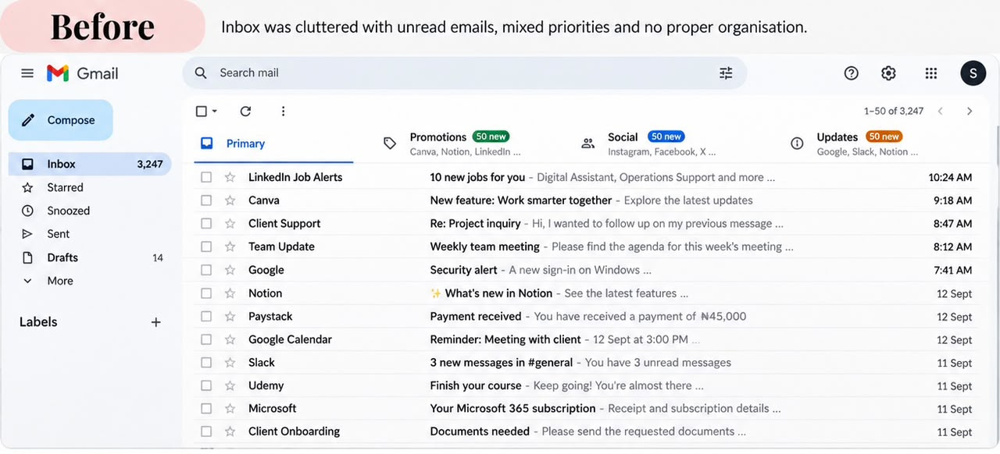
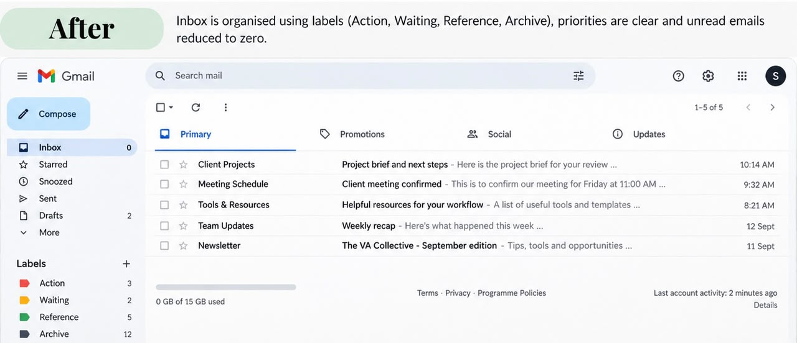
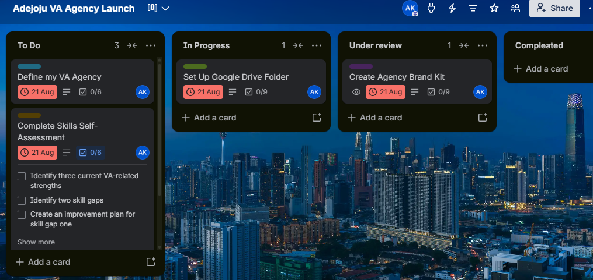
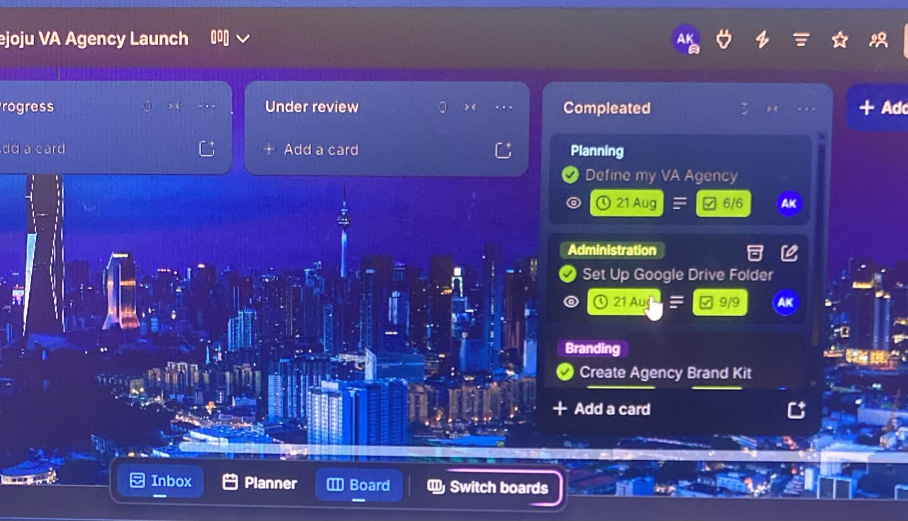
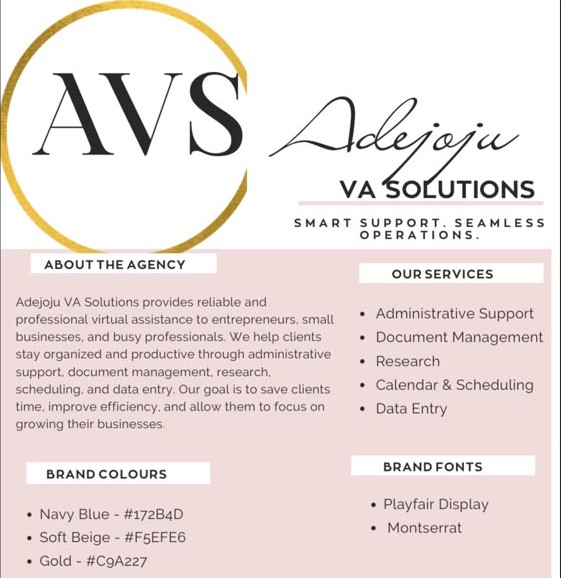

Virtual Assistant · Available for Remote Work
Founder of Adejoju VA Solutions. Trained through TS Academy's Virtual Assistance program, where I built the systems, brand, and self-awareness behind launching a VA practice from the ground up.
About Me
I'm a detail-oriented and dependable Virtual Assistant with a growing focus on email and calendar management, client communication, project coordination, data entry, and research. Through TS Academy's Virtual Assistance program, I've developed practical skills in organizing workflows, managing tasks with Trello, creating a professional brand identity, and assessing my strengths and areas for growth.
I enjoy creating organized systems, communicating clearly, and helping clients stay on top of their priorities.
What I Offer
Keeping your schedule and inbox organized so nothing falls through the cracks.
Managing timelines, checklists, and follow-ups across your team using tools like Trello.
Responding to emails, messages, and inquiries promptly and professionally.
Organized, accurate data entry and research support, delivered on time.
Scheduling posts, replying to comments, and keeping your online presence active.
Simple Canva graphics for social posts, brand materials, and presentations.
Portfolio
Organized a fictional client's inbox by categorizing emails, creating labels, and prioritizing messages.


Featured Work
Three milestones from the TS Academy Virtual Assistance program, the projects behind this portfolio.
01 · Agency Launch
Adejoju VA Solutions is the practice I set up during this program to manage virtual assistant work end to end. I organized my workflow on Trello using four lists: To Do, In Progress, Under Review, and Completed, so every task's status is visible at a glance and nothing slips through the cracks.
Trello's card-based system makes it easy to track deadlines, checklists, and progress across multiple client projects at once, exactly the kind of lightweight, reliable structure a growing VA agency needs.


02 · Brand Kit
Adejoju VA Solutions provides reliable and professional virtual assistance to entrepreneurs, small businesses, and busy professionals. I help clients stay organized and productive through administrative support, document management, research, scheduling, and data entry, with the goal of saving clients time, improving efficiency, and letting them focus on growing their businesses.
Fonts: Playfair Display (headings) · Montserrat (body)

03 · Skills Self-Assessment
Client Feedback
"Add a short quote from a client about working with you here."
"Add a second testimonial once you've delivered work for a client."
Available for remote virtual assistant support, reach out anytime.
adejojubadmus@gmail.com